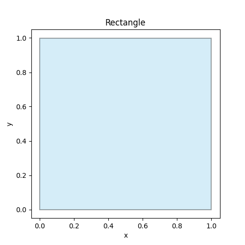
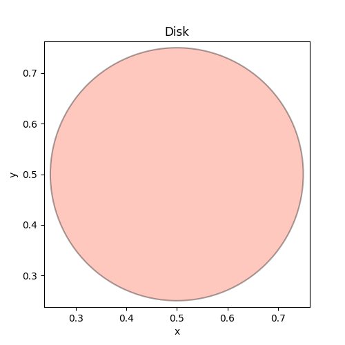
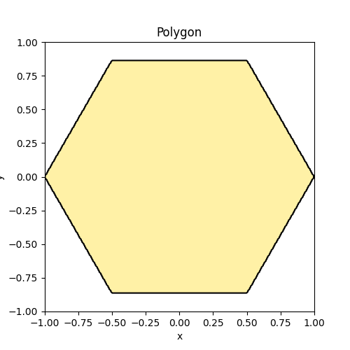
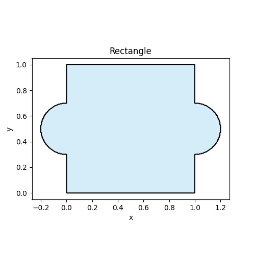
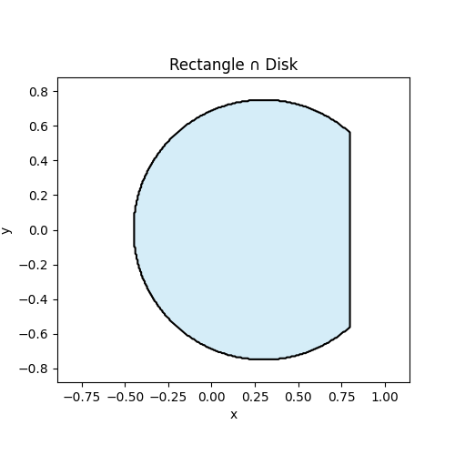
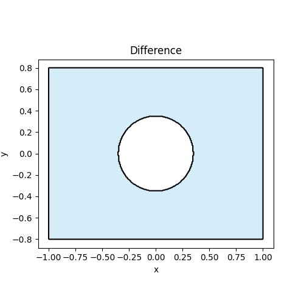
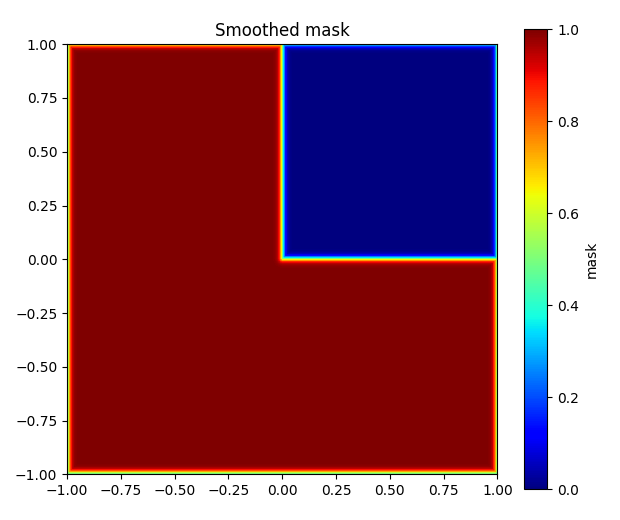
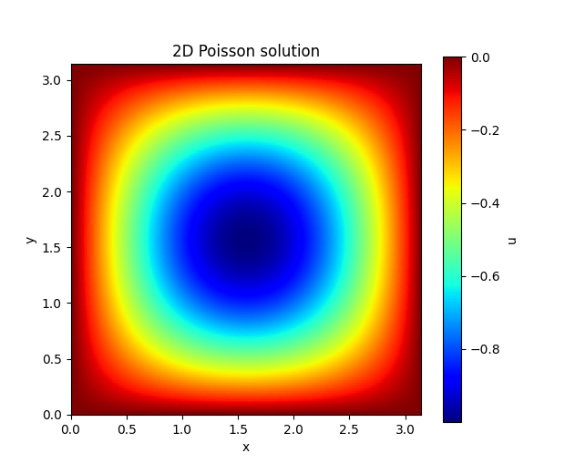
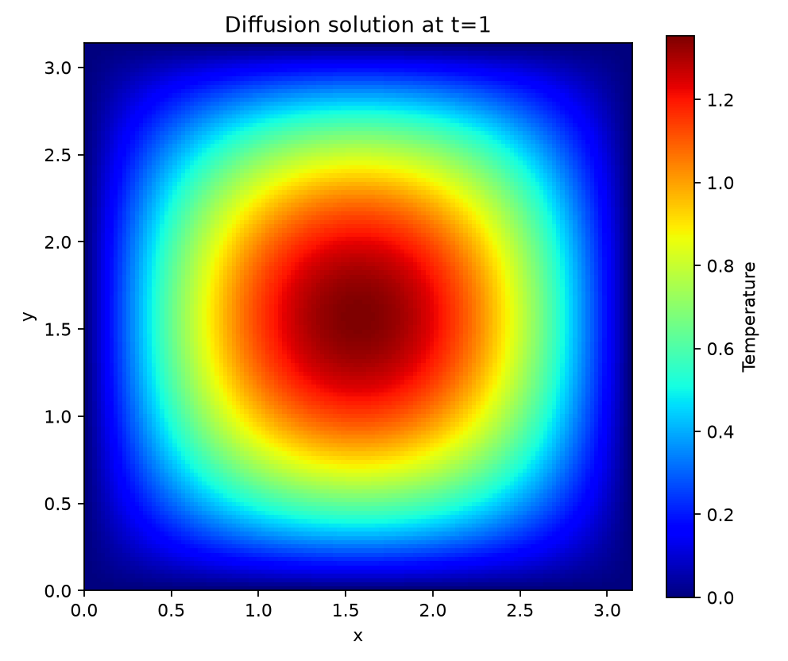
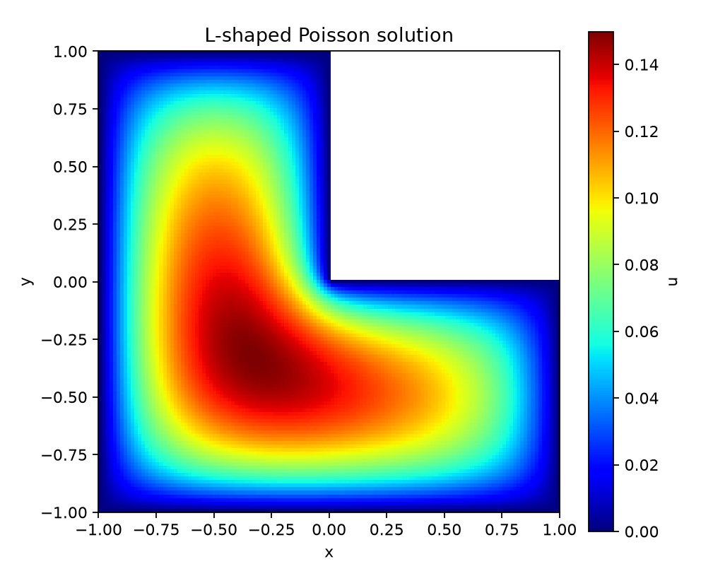

Quickstart¶
This public site can show how to use OptiXDE without exposing the private repository.
Installation¶
If OptiXDE is private, keep installation instructions generic:
# Option A: internal/private install (example)
pip install optixde --extra-index-url <YOUR_PRIVATE_INDEX>
# Option B: request access to the private repo
# (See the "Cite & Contact" page)
Install the public release¶
Public releases of OptiXDE can be installed directly from PyPI. The core package only requires NumPy; install optional features when they are needed.
pip install optixde
# Optional features
pip install "optixde[plot]" # Matplotlib plotting helpers
pip install "optixde[sparse]" # SciPy-based embedded-domain solvers
pip install "optixde[gpu]" # PyTorch backend for GPU FFT solvers
Verify the installation by printing the installed version:
Geometry Construction Tutorial¶
OptiXDE runs on an FFT-compatible uniform grid, so geometry is represented implicitly as a mask field on that grid (not a mesh). The recommended public-facing pipeline is:
primitives → CSG → binary mask → smoothed mask → embedded/penalized PDE
This keeps the API simple while allowing complex shapes, and it’s safe to share publicly because it demonstrates usage rather than implementation.
1) Create a geometry (primitives)¶
OptiXDE provides simple 2D primitives that can be composed later with CSG operations. Here are three basic examples.
Example 1: Rectangle¶
from optixde.geometry.primitives import Rectangle
from optixde.post.plotting import show_geometry
geo = Rectangle(0.0, 1.0, 0.0, 1.0)
show_geometry(geo, title="Rectangle", facecolor="skyblue", edgecolor="black")

Example 2: Disk¶
from optixde.geometry.primitives import Disk
from optixde.post.plotting import show_geometry
geo = Disk((0.5, 0.5), 0.25)
show_geometry(geo, title="Disk", facecolor="tomato", edgecolor="black")

Example 3: Polygon¶
from optixde.geometry.primitives import Polygon
from optixde.post.plotting import show_geometry
geo = Polygon([
(1.0, 0.0),
(0.5, 0.8660254),
(-0.5, 0.8660254),
(-1.0, 0.0),
(-0.5, -0.8660254),
(0.5, -0.8660254),
])
show_geometry(geo, title="Polygon", facecolor="gold", edgecolor="black")

2) Apply boolean operations¶
Boolean operations combine simple primitives into more complex shapes. In OptiXDE, the most common operations are:
- : union
- : intersection
- : difference
Below are three minimal examples using Rectangle, Disk, and Polygon.
Example 1: Union of a rectangle and two circle¶
from optixde.geometry.primitives import Rectangle, Disk
from optixde.post.plotting import show_geometry
from optixde.geometry.boolean import Union
rect = Rectangle(0.0, 1.0, 0.0, 1.0)
left_circle = Disk((0.0, 0.5), 0.2)
right_circle = Disk((1.0, 0.5), 0.2)
geo = Union(rect, left_circle, right_circle)
show_geometry(geo, title="Rectangle", facecolor="skyblue", edgecolor="black")

Example: Intersection of a rectangle and a disk¶
from optixde.geometry.primitives import Rectangle, Disk
from optixde.geometry.boolean import Intersection
from optixde.post.plotting import show_geometry
rect = Rectangle(-0.8, 0.8, -0.8, 0.8)
disk = Disk((0.3, 0.0), 0.75)
geo = Intersection(rect, disk)
show_geometry(
geo,
title="Rectangle ∩ Disk",
facecolor="skyblue",
edgecolor="black",
)

Example: Difference of a rectangle and a disk¶
from optixde.geometry.primitives import Rectangle, Disk
from optixde.geometry.boolean import Difference
from optixde.post.plotting import show_geometry
rect = Rectangle(-1.0, 1.0, -0.8, 0.8)
hole = Disk((0.0, 0.0), 0.35)
geo = Difference(rect, hole)
show_geometry(
geo,
title="Difference",
facecolor="skyblue",
edgecolor="black",
)

3) From geometry to mask field¶
OptiXDE represents geometry on an FFT-compatible uniform grid as a mask field.
Example: geometry to binary mask¶
The geometry can be sampled on a uniform Cartesian grid and represented as a mask field.
In this example, an L-shaped domain is created by subtracting the square [0,1] × [0,1] from the outer square [-1,1] × [-1,1]. The geometry is evaluated on a regular grid, and a smoothed mask is generated for visualization and for later use in embedded-domain solving.
import numpy as np
import matplotlib.pyplot as plt
from optixde.geometry.primitives import Rectangle
from optixde.geometry.boolean import Difference
x = np.linspace(-1.0, 1.0, 257)
y = np.linspace(-1.0, 1.0, 257)
X, Y = np.meshgrid(x, y, indexing="xy")
P = np.c_[X.ravel(), Y.ravel()]
geo = Difference(
Rectangle(-1.0, 1.0, -1.0, 1.0),
Rectangle(0.0, 1.0, 0.0, 1.0),
)
eps = 2.0 * (x[1] - x[0])
mask = geo.smooth_mask(P, eps=eps).reshape(len(y), len(x))
plt.figure(figsize=(6.2, 5.2))
plt.imshow(
mask,
origin="lower",
cmap="jet",
extent=[x[0], x[-1], y[0], y[-1]],
)
plt.colorbar(label="mask")
plt.title("Smoothed mask")
plt.tight_layout()
plt.show()

4) Define, solve, and visualize a PDE¶
Once the computational grid and source term are prepared, solving a PDE in OptiXDE is straightforward.
In this example, we consider the 2D Poisson equation on the square domain [0, \pi] \times [0, \pi] with homogeneous Dirichlet boundary conditions,
[
-\Delta u = f \quad \text{in } \Omega,
]
where the right-hand side is chosen as
[
f(x,y)=2\sin(x)\sin(y).
]
For this choice, the exact solution is
[
u(x,y)=\sin(x)\sin(y),
]
which makes the example convenient for verification. After defining the source field on the uniform grid, the Poisson solver is called directly, and the resulting solution is visualized as a color map. This illustrates the basic OptiXDE workflow: define the PDE, solve it on the FFT-compatible grid, and inspect the result immediately.
import numpy as np
import matplotlib.pyplot as plt
from optixde.solvers.base.poisson import poisson2d_solve
Lx = Ly = np.pi
N = 128
dx = Lx / (N + 1)
dy = Ly / (N + 1)
x = np.linspace(dx, Lx - dx, N)
y = np.linspace(dy, Ly - dy, N)
X, Y = np.meshgrid(x, y, indexing="xy")
f = np.zeros((N + 2, N + 2))
f[1:-1, 1:-1] = 2.0 * np.sin(X) * np.sin(Y)
u = poisson2d_solve(f, Lx, Ly, bc="dirichlet", workers=8)
plt.figure(figsize=(6.2, 5.2))
plt.imshow(
u,
cmap="jet",
origin="lower",
extent=[0, Lx, 0, Ly],
)
plt.colorbar(label="u")
plt.title("2D Poisson solution")
plt.xlabel("x")
plt.ylabel("y")
plt.show()

5) Understand grid and boundary-condition conventions¶
Two-dimensional fields in OptiXDE use shape (Ny, Nx): the first axis is the
y direction and the second axis is the x direction. The grid construction
depends on the boundary condition because each condition uses a different
spectral transform.
| Boundary condition | Transform or enforcement | Recommended grid |
|---|---|---|
periodic |
FFT | Endpoint excluded |
dirichlet |
DST on the interior | Physical boundary included |
neumann |
DCT on the full field | Physical boundary included |
robin |
Boundary projection / penalty | Physical boundary included |
For a periodic domain [0,Lx) × [0,Ly), construct an endpoint-free grid:
x = np.linspace(0.0, Lx, Nx, endpoint=False)
y = np.linspace(0.0, Ly, Ny, endpoint=False)
X, Y = np.meshgrid(x, y, indexing="xy")
For homogeneous Dirichlet conditions, include the physical boundary. The
interior values are stored in u[1:-1, 1:-1], while the returned boundary is
zero.
x = np.linspace(0.0, Lx, Nx + 2)
y = np.linspace(0.0, Ly, Ny + 2)
X, Y = np.meshgrid(x, y, indexing="xy")
u = np.zeros((Ny + 2, Nx + 2))
For periodic and Neumann Poisson problems, the source must have zero mean. OptiXDE fixes the additive constant of the solution with a zero-mean gauge.
6) Solve a time-dependent PDE¶
OptiXDE can also advance time-dependent equations. Consider the two-dimensional diffusion equation
with homogeneous Dirichlet boundary conditions. Each call to
diffusion2d_solve advances the field by one timestep.
import numpy as np
import matplotlib.pyplot as plt
from optixde.solvers import diffusion2d_solve
Lx = Ly = np.pi
N = 128
D = 1.0
dt = 0.05
T = 1.0
dx = Lx / (N + 1)
x = np.linspace(dx, Lx - dx, N)
y = np.linspace(dx, Ly - dx, N)
X, Y = np.meshgrid(x, y, indexing="xy")
u = np.zeros((N + 2, N + 2))
u[1:-1, 1:-1] = 10.0 * np.sin(X) * np.sin(Y)
for _ in range(int(round(T / dt))):
u = diffusion2d_solve(u, D, Lx, Ly, dt, bc="dirichlet")
plt.figure(figsize=(6.2, 5.2))
plt.imshow(u, cmap="jet", origin="lower", extent=[0, Lx, 0, Ly])
plt.colorbar(label="Temperature")
plt.title(f"Diffusion solution at t={T:g}")
plt.xlabel("x")
plt.ylabel("y")
plt.tight_layout()
plt.show()

7) Solve a PDE on an embedded geometry¶
The geometry-to-mask workflow can be continued directly into an embedded-domain solve. Here the same L-shaped region is written as a polygon, homogeneous Dirichlet data are assigned to every edge, and
is solved on a Cartesian grid. Install the sparse optional dependency before
running this example.
import numpy as np
import matplotlib.pyplot as plt
from optixde.bc.segmented import DirichletBC, EdgeSegment
from optixde.geometry.primitives import Polygon
from optixde.solvers import poisson2d_polygonal_embedded
vertices = np.asarray([
(0.0, 0.0),
(1.0, 0.0),
(1.0, -1.0),
(-1.0, -1.0),
(-1.0, 1.0),
(0.0, 1.0),
])
geo = Polygon(vertices)
bcs = [
DirichletBC(segment=EdgeSegment(edge_id=i), value=0.0)
for i in range(len(vertices))
]
u, metadata = poisson2d_polygonal_embedded(
geometry=geo,
bcs=bcs,
source=1.0,
Nx=129,
Ny=129,
return_metadata=True,
)
grid = metadata["grid"]
cmap = plt.cm.jet.copy()
cmap.set_bad("white")
plt.figure(figsize=(6.2, 5.2))
plt.imshow(
u,
origin="lower",
cmap=cmap,
extent=[grid["x"][0], grid["x"][-1], grid["y"][0], grid["y"][-1]],
)
plt.colorbar(label="u")
plt.title("L-shaped Poisson solution")
plt.xlabel("x")
plt.ylabel("y")
plt.tight_layout()
plt.show()

8) Switch between CPU and GPU backends¶
NumPy is the default backend. Periodic FFT solvers can use the PyTorch backend
on a CPU or CUDA GPU without changing the equation. The following example uses
a manufactured periodic Poisson problem with the exact solution
sin(2x) cos(3y).
import numpy as np
from optixde.solvers import poisson2d_solve
Lx = Ly = 2.0 * np.pi
N = 128
x = np.linspace(0.0, Lx, N, endpoint=False)
y = np.linspace(0.0, Ly, N, endpoint=False)
X, Y = np.meshgrid(x, y, indexing="xy")
f = 13.0 * np.sin(2.0 * X) * np.cos(3.0 * Y)
u_cpu = poisson2d_solve(
f, Lx, Ly,
bc="periodic",
backend_name="numpy",
)
u_gpu = poisson2d_solve(
f, Lx, Ly,
bc="periodic",
backend_name="torch",
device="cuda",
)
Use device="cpu" to test the PyTorch path on a machine without CUDA. The
Dirichlet and Neumann DCT/DST paths are primarily intended for NumPy arrays.
9) Inspect solver diagnostics¶
Unified solver entry points support return_info=True. The returned metadata
records which numerical path was used and is useful for tests, benchmarks, and
GPU checks.
u, info = poisson2d_solve(
f,
Lx,
Ly,
bc="periodic",
backend_name="numpy",
return_info=True,
)
for key in (
"solver",
"equation",
"bc",
"transform",
"backend",
"device",
"input_shape",
"output_shape",
):
print(f"{key}: {info[key]}")
Typical transform values include fft, dst, dct, and robin_penalty.
Equation-specific metadata may also report the timestep, diffusivity, wave
speed, viscosity, or other solver parameters.
10) Explore more equations¶
The same public solver namespace provides elliptic, evolution, nonlinear, wave, and flow equations.
| Equation or topic | Main public entry points | Guide |
|---|---|---|
| Poisson and Helmholtz | poisson2d_solve, helmholtz2d_solve |
Elliptic solvers |
| Diffusion and wave | diffusion2d_solve, wave2d_solve |
Evolution equations |
| Allen--Cahn and Burgers | allen_cahn2d_solve, burgers1d_solve |
Evolution equations |
| Navier--Stokes and cylinder flow | navier_stokes2d_vorticity_solve, cylinder_flow2d_solve |
Flow solvers |
| Schrödinger equations | schrodinger2d_solve, schrodinger1d_cubic_solve |
Evolution equations |
| Polygonal domains | poisson2d_polygonal_embedded, transient_diffusion_polygonal_embedded |
Embedded domains |
11) Run complete examples¶
The OptiXDE repository contains complete examples, validation cases, and paper reproduction scripts. After cloning the repository and installing the desired optional dependencies, try these commands:
git clone https://github.com/yangyLab/OptiXDE.git
cd OptiXDE
pip install -e ".[plot,sparse]"
# Minimal time-dependent diffusion example
python examples/base/diffusion_dirichlet_minimal_demo.py
# Embedded L-shaped Poisson example
python examples/base/poisson_lshape_deepxde_benchmark.py \
--n 129 \
--output examples/artifacts/lshape_quickstart.png
# PyTorch backend smoke test; use --device cuda on a CUDA runtime
python examples/benchmarks/colab_torch_gpu_smoke.py --device cpu --n 64
Examples do not save figures by default unless an output path is supplied.
Use --output or --output-dir to keep generated figures, CSV files, and
tables. See the Benchmarks page for larger verification and
performance studies.